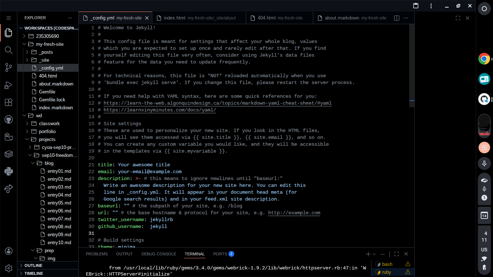

Entry 4
Entry 4: Choosing my tool.
3/14/26
Choosing My Tool
Before starting my project, one of the things that I do in order to ensure that I will be able to create a professional, pleasing website is choosing a tool, such as WowJS, AnimateCSS, and Jekyl, I chose Jekyll. While I was figuring out what would be better for me, I was previewing other tools such as Middlebars and Mustache, but at the end I didn’t like them very much. When I began to look over Jekyll, I watched a couple of videos by Giraffe Academy to find out how to install Jekyll, that way I could tinker with it and see if I liked it. Turns out, I do. From what I’ve learned Jekyll enables you to use Yaml, HTML, and Markdown together, which is very useful due to how easily you can create and structure a website using Yaml.
Tinkering with Jekyll
As I mentioned earlier, the first thing I did with Jekyll was watch a tutorial of how to install Jekyll. Once installed, I used a command to create a default “site” or website which showed some of what Yaml alone could do.

In addition to this, I also tried linking a Yaml file to Html and Markdown, but I wasn’t very succesful. Despite of this, I think having tried this will help me have an idea of what it will be like to link these files together in the future.

Skills
Some of the skills that I gained while choosing and tinkering with my tool were being able to stick with something I don’t fully understand, being able to download Jekyll, and to create a site.
Even though these are basic things, they will probably help me a lot in the future whenever I have to learn a different tool, or learn anything new in general. Being able to stick to something I don’t fully understand can help me with a lot of different things; temporarily sticking to a job I don’t like, having to play a position that I don’t know how to play in a sport, or even learning new material in my classes. Knowing how to install tools like Jekyll will probably help me in the future if I choose to learn another tool, that way I don’t have to spend a lot of time trying to figure out how to start.
| Previous | Next |